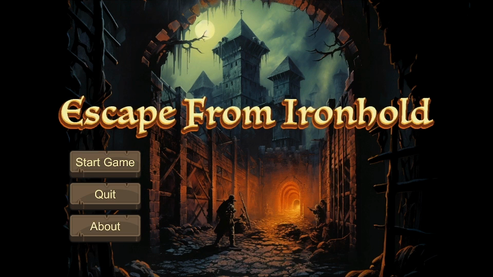
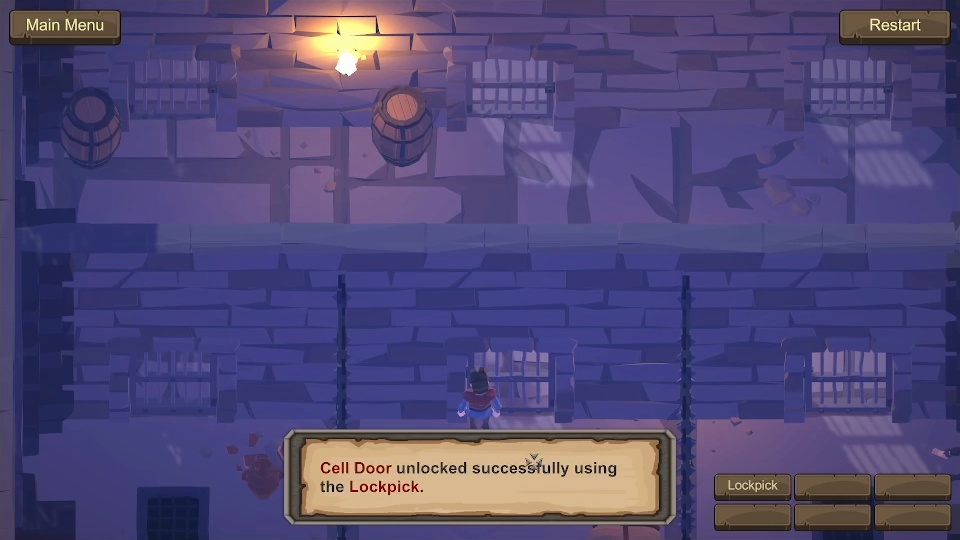
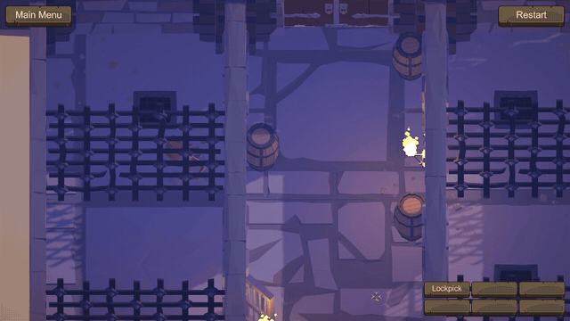
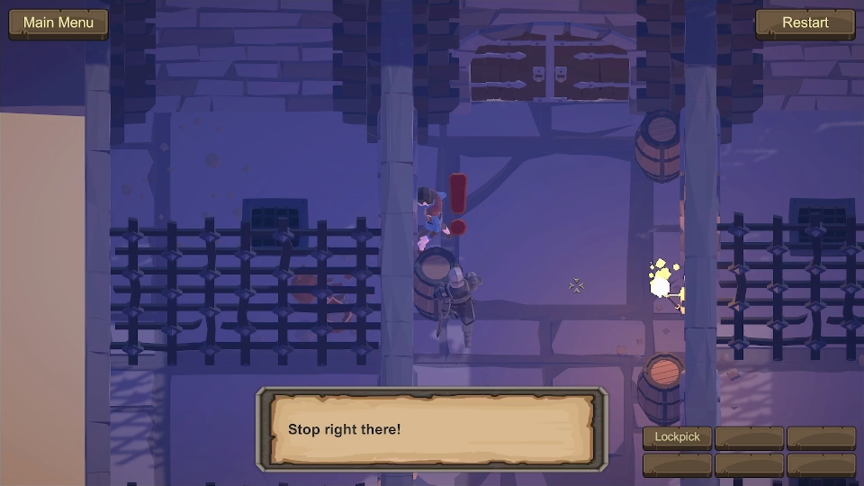
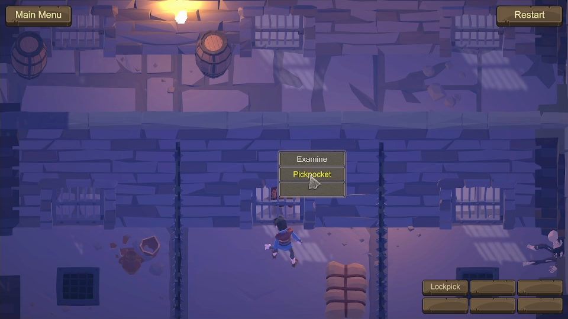
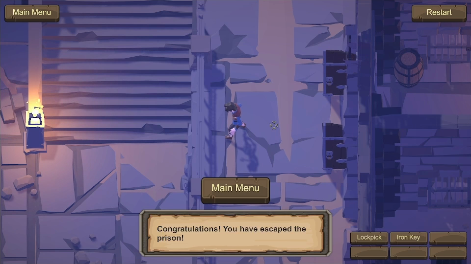

Escape from Ironhold: my first attempt at game development
Escape from Ironhold was my first attempt at game development. I made it twice, first as a text adventure in Python in late 2023, then as a 3D game in Unity, which I finished in June 2024 for the Computer Graphics course of my master's. You play a prisoner trying to escape his cell without the guard catching him.

The parser
> Inspect the straw mattress on the floor.
The straw mattress doesn't seem comfortable but it's better than nothing.
- You discover a rusty iron lockpick hidden under the mattress.
> Check the lockpick's condition and see if it's usable.
A rusty lockpick, suitable for picking locks.
It shows signs of wear, but perhaps it will suffice.
> Pick it up.
You now have the lockpick in your possession.
You can hear the guard snoring outside of your cell.
> Wait for the guard to leave.
Patience is your current strategy; you wait for developments.
The guard subtly adjusts his position on his chair.
The guard wakes up and leaves, disappearing from your view.
> Now that the guard has left, use the rusty lockpick to unlock the lock on the cell door.
With a twist of the lockpick, the cell lock opened up.
These are just some examples of what the game's parser can do. The parser is the part I'm proudest of. Making "use the rusty lockpick to unlock the lock on the cell door" mean what it says sent me through the whole documentation of Inform, the language a lot of parser-based interactive fiction is written in. I rebuilt the parts of Inform's world model that I needed in Python, such as grammar lines for each verb, a scope of things you can reach, objects concealed inside other objects, a scoring system for deciding which "door" you mean when the room has two, and a reference system to decide what you mean when you say "it" in "pick it up". LLMs existed back then, but all I had was copying and pasting to and from ChatGPT, and for the parser that was no help at all.
Then there is the guard. Every turn he may move somewhere new, near your cell, on patrol, near the exit or at the back of the dungeon. Where he stands sets the odds that he notices anything.
chance_of_detection = {
self.NOT_IN_DUNGEON: 0,
self.NEAR_EXIT: 0.125,
self.PATROLLING: 0.25,
self.NEAR_CELL: 1,
self.BACK_OF_DUNGEON: 0.125,
}
The same table decides whether he spots that your cell door is open. If he does while you're hiding in the barrel, he starts searching the whole dungeon for you. He also keeps a grudge. Throw things at him and his attitude drops, from "Sit down, little scum" to a last warning, and one throw past that he comes into your cell and kills you. Unless you've already lifted his keys. Then he reaches for them, finds nothing, says "Damn it, I must have dropped the key at the toilets!" and leaves you alone in the dungeon.
The door problem
Liz England's essay The Door Problem shows how one door keeps every role on a game team busy.
In the text version an open door is a flag, while in Unity it is an object that has to swing on its hinges a little every frame, 90 degrees per second up to 135 and not a degree more. While it closes, the player is moved to a layer that ignores collisions, so a closing door can't shove them around. Opening it also moves the door itself to a layer the guard can see. As long as the door is closed, he can't see into the cell.
I wrote this in my report for the course.
At one point during development I sat back for a minute and realised I had just solved a problem for which there were no guides at all, relying only on the documentation. That problem was the rotation of the door. I admit my solution may not be ideal, and it is certainly not readable or easy to maintain, but it works exactly the way I wanted within the game.

The 3D guard rolls only one die, when he pauses, to decide whether he dozes off. The rest is a state machine with five states (patrol, pause, sleep, alert and caught). His field of view and the state pattern both started from YouTube tutorials. What I added is a grace period, so he has to keep you in sight for a moment before he's sure. When the open cell door comes into view, he says "Huh? The door is open!" and switches to alert, which is patrolling with a question mark over his head.

If he keeps you in view, it's "Stop right there!" and back to the cell.

The dungeon is Synty's POLYGON Dungeon pack from the Unity Asset Store and the animations come from Mixamo. The camera and click-to-move began as tutorials, like the field of view. What I wrote is everything that decides what happens. Each object is a set of attributes (Openable, Unlockable, Pickpocketable, Enterable), and the menu offers only the verbs whose attributes say yes. When you click the guard, one of the options is Pickpocket, but only until you've robbed him.

The rest of the castle
The Unity version ends at the dungeon gate, but Ironhold is a whole castle, and I have wanted to build the rest of it ever since. My report for the course already listed what would come next. You would throw a stone to draw the guard away, or put out the torches so he sees less. There would be sound, which the game still doesn't have, and a story for the protagonist. Turning Escape from Ironhold into a complete game is a dream I still carry.
